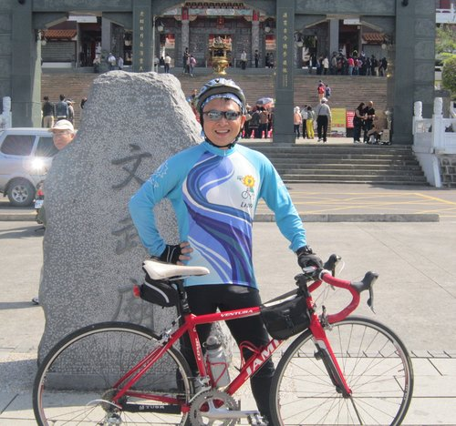

今天要去哪裡呢?!
今天就從日月潭出發，讓沿途的風景陪著我們，一路拜訪日月潭老茶廠、廖鄉長紅茶故事館、桃米生態村、紙教堂、暨南大學，騎向今天的下榻處－天水蓮飯店，讓我們一同縱身躍入鯉魚潭畔溫泉池的懷抱吧!
縱使有數位獅友們在前一夜歡迎晚會後，被培睿學長主講的睡前床邊故事－「飄」，嚇得心裡毛毛，一整夜都不敢睜開雙眼去上廁所，但擁有鐵人魂的獅友們今天還是起個大早，朝氣十足地向日月潭的晨光say hi，準備展開今天的旅程。
出發囉!!
文武廟前來比武，本次的比武項目是:蛤蟆功。
諸位大俠皆是摩拳擦掌，準備應戰。
最後一輪的參賽者有二審代表:珠珠姐、江主任以及基層代表:柏宏學長。究竟鹿死誰手，誰才是本次的武林盟主呢?就讓我們看下去…
在眾多高手競爭之下，由柏宏學長拔得頭籌。柏宏學長果然是內力深厚，更勝歐陽鋒。

充滿古意的建築物裡，瀰漫著茶香，迴盪著製茶機具所發出的隆隆運轉聲，這裡是日月潭老茶廠。茶農以有機栽種法所孕育出的台茶8號(阿薩姆紅茶)及台茶18號(紅玉紅茶)，吸引獅友們聞香下馬，就為了品一品紅茶的甘醇美好。

告別古意盎然的日月潭老茶廠，來到甫於2012年落成的「廖鄉長紅茶故事館」，在這座歐式建築裡，擺放這各式各樣的製茶機具，導覽員仔細地解說紅茶的歷史及製程，帶領獅友們一窺魚池鄉紅茶的過去，展望魚池鄉紅茶的現在與未來。當然，在認真聽講的同時也要再來一杯香醇的紅茶。
「桃米」位在南投縣埔里鎮，於921地震後，在政府、學界、社會、社區居民及非營利組織的跨界合作下，從豐沛的家園山水出發，循著教育學習—觀念改變—行動實踐的策略，攜手打造出的生態村(摘自桃米生態村網站)。
一進入桃米生態村，隨處可見當地的最佳代言人—青蛙
導覽途中巧遇小蜥蜴，意外成為最佳Model
橋斷去，係咩按那造?
別擔心，這是桃米村的「同心橋」，只要兩端夥伴們的同心協力就能輕鬆通過。
順利通過了同心橋，永結橋上來個大合照
在1995年，因阪神大地震而誕生的紙教堂(Paper Dome)，於2005年，飄洋過海從日本來到了曾同受震災之苦的埔里鎮，落腳於桃米社區，成為一個極具生態工程的典範，並將紙教堂的精神流傳下來(參考自維基百科)。
紙教堂外觀
紙教堂內部
洋溢著恬淡幸福感的領導伉儷
在紙教堂歇歇腿後，緊接著要挑戰暨南大學的無止盡上坡。進入暨南大學的這段路堪稱本次旅程中最累人的上坡，但勇腳的獅友們依舊賣力地完成了這項挑戰，並在終點領到最佳獎賞—甜美多汁西瓜。
感謝雲龍大哥在我們氣力放盡的這一刻，即時準備好水果，為我們注入新動力。
在前往飯店的途中，路過了埔里鼎鼎有名的18度C巧克力，PERRY學長特別贊助「18度C壓驚巧克力」，為諸位獅友們收驚，以撫慰昨晚被阿飄故事驚到的獅友們。
抵達本日終點，拆車，準備泡湯囉!
感謝家偉協助大家把單車裝進遊覽車。
大家也借此機會學到不少拆裝單車的小技巧。
（特別令人驚艷的，是家偉的大蠻腰......耐操而有力喔）
又到了歡樂的晚會時間
由於明天日月潭單車行就要進入尾聲(不捨狀)，今晚登場的是「惜別晚會」!
晚安，各位夥伴，養足精神，準備展開明天的旅程吧!